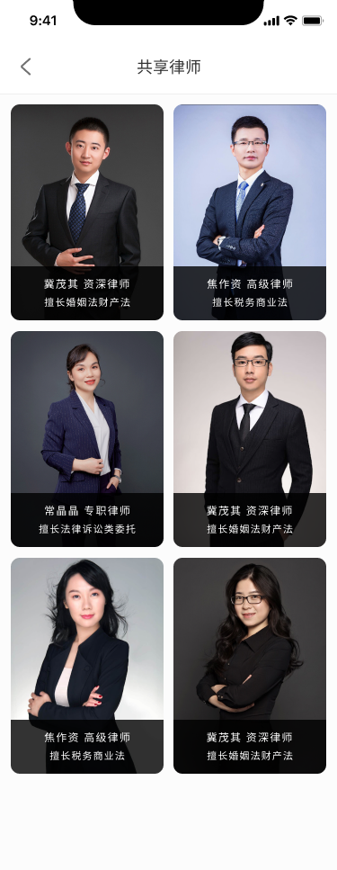
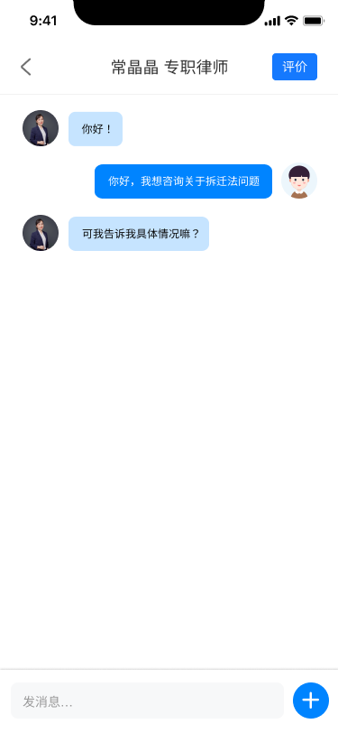
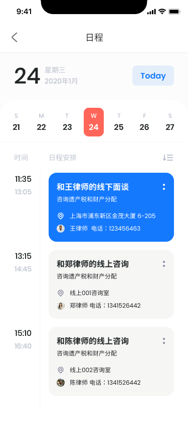

Find support
Legal education, service categories, and lawyer discovery create multiple routes into help.
Public service / Legal technology / 2021 launch
An end-to-end public legal-service product connecting residents with information, lawyers, consultation, appointments, documents, and community delivery.
01 / Brief
Falitang was my first project carried from structure and interface design through to public launch. The design needed to serve residents seeking immediate help while also connecting the wider service around lawyers, appointments, content, and legal documents.
The work treated the app as one part of a broader public-service system. Clear entry points, visible service status, and direct routes to a lawyer were prioritised over a content-heavy portal experience.
Legal education, service categories, and lawyer discovery create multiple routes into help.
Text, voice, video, scheduling, and messaging support different levels of urgency.
Calendars, contracts, case information, and notifications keep the interaction connected.
02 / Product system
FALITANG / PUBLIC LEGAL SERVICE SYSTEM
Find reliable guidance, a verified lawyer, and the right place to begin.

Turn an uncertain question into structured, accessible legal support.

Keep appointments, messages, and follow-up together after the first call.

Users can enter through a legal topic, lawyer list, hotline, or direct consultation.
Lawyer profiles and consultation channels make the person behind the service clear.
Messages, appointments, documents, and case information connect discovery to action.
03 / Public delivery
The Apple listing records the first version in August 2021 and keeps the product publicly discoverable. A Qingpu District Government article sourced from the Green Qingpu WeChat account reported the Smart Cloud Falitang service launching in two communities in December 2021.
The report describes online lawyer consultation, legal education, psychological support, remote mediation, data reporting, and round-the-clock lawyer access as part of the community service.